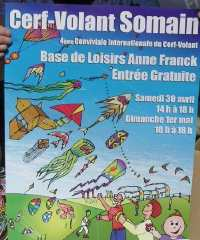
Somain, c'est près de Valenciennes, c'est pas une grande ville, mais ils en font des efforts ! Cette année, la conviviale n'est plus dans la zone industrielle mais bien dans la base de loisirs Anne Frank (faut pas de C à Frank, pas comme sur l'affiche, j'ai appris ça...). Faut bien ça, il y aura plus de 20000 personnes le dimanche !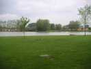
Dans le parc, un grand lac avec des canards et des oies (pas une, un troupeau de 25 oies en liberté, mais jamais là quand on veut les photographier...) et des pêcheurs le matin.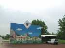
A l'entrée de la zone "cerfs-volants", un ancien fronton (pour le tennis ?) désaffecté mais décoré.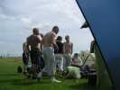
Bon, samedi matin, les Gwenn Ha Du sont déjà en train de s'échauffer, voire déjà bien chauds...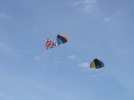
Avec du beau soleil et un petit vent, les grandes Nasas sont de sortie pour un harmonieux ballet au ralenti.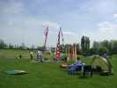
Pendant ce temps, les cervolistes continuent à arriver et à monter leur matos.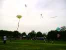
Les stands sont montés, le public commence à débarquer, les Gwenn Ha Du continuent, les moustaches du superbe chat à structure Gressier commencent à vibrer...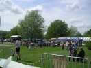
Il fait beau, les anciens se sont réservé une place de choix au coin du terrain.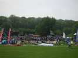
Et la foule s'amasse autour du macadam des terrains de basket où le spectacle sera permanent.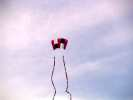
On voit plein de sleds, comme celui-ci avec ses longues queues tubulaires.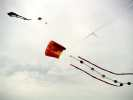
...ou celui-là avec aussi de longues queues.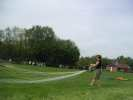
Mais le vent ne souffle que très modérément, avec même des périodes plus que modérées !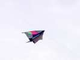
Ce grand delta vole quand même. L'arrière de la quille comporte un tube qui se prolonge vers l'arrière et crée aussi une dérive supérieure.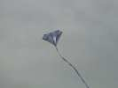
Et il y a des cerfs-volants de valeur !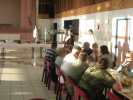
Le soir arrive, petit dîner tranquille dans la salle en ville, je vous dis pas le cortège de camping-cars et autres...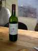
Le vin semble avoir été offert par Claude comme publicité pour les rencontres de Brie.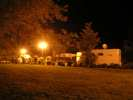
Et puis, on rentre se coucher. Le coin des camping-cars est très sympa, dans le parc à cette heure fermé et gardienné, on est entre nous. Bonsoir !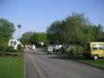
Au matin, grand beau temps, et le vent s'annonce un peu plus fort que le samedi, belle journée en perspective, sortez l'ambre solaire !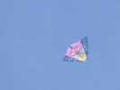
Gérard Rosenblatt a ressorti un vieux cerf-volant qui vole très bien par petit temps, qui semble dérivé d'un Wulandra élargi. Mais pas du tout, il est parti d'un gonflable ( la partie centrale), n fois modifié et élargi.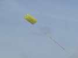
Il a aussi réalisé un vrai gonflable, avec son dada du moment : le plastique cousu. Mais pas choisi n'importe comment ! Le jaune éclate au soleil, et les parties transparentes créent des effets profonds et changeants.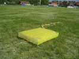
Vu de près, des clapets empêchent l'air de ressortir (un certain temps...). Des secrets ? Pour les coutures, un point le plus long possible et pas arrêtées : faire juste un noeud au bout des fils.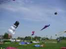
Jean-François a amené de Fécamp des gonflables dont ce "bonhomme de neige" imposant.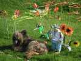
Il y a aussi quelques jardins du vent. Ceux de Joel avec sa grenouille ou de François avec ses CDs, vous les connaissez, même s'ils s'améliorent à chaque sortie... Logos, lui, a fait ami avec le lapin de Patricia !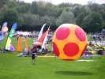
Il y a même un ballon de foot mais de taille respectable !).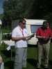
Midi arrive. Avant le repas, un petit pot, précédé de quelques discours du président Fabian, du maire, etc.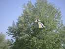
Pour bien marquer le lieu de rendez-vous, Joël l'a décoré avec son Roller à queue prenante...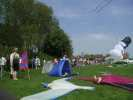
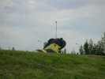
On va même voir un Megabyte jaune et noir qui commence à s'élever...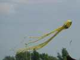
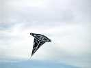
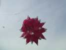
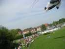
J'ai fait aussi un peu de photo aérienne avec ma "nacelle" pliante, mais je ne suis pas très persévérant. On voit bien les cerfs-volants et le public, non ?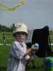
Les Gwenn Ha Du (enfin, William) avaient amené leur progéniture.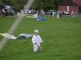
L'initiation au cerf-volant est difficile, mais Owen a quand même gagné un T-Shirt...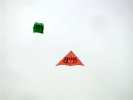
Bruno a fait le commentaire, toujours très bon, toute la journée de dimanche. Mais, NON, Bruno, ce cerf-volant n'est pas un B&B, mais un P&B, comme "Patricia et Bernard".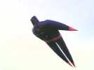
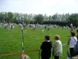
En fin d'après-midi, les enfants des écoles sont venus (pas tous) lancer (ou essayer de le faire) les 450 cerfs-volants construits sous l'égide de Fabian dans leurs établissements. Le vent était un peu faible pour ces coccinelles...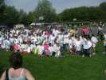